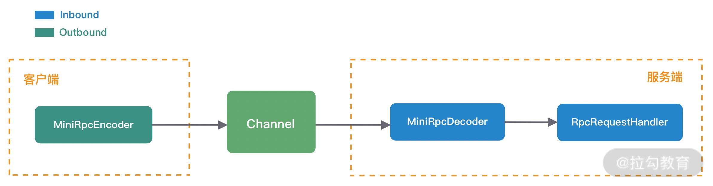
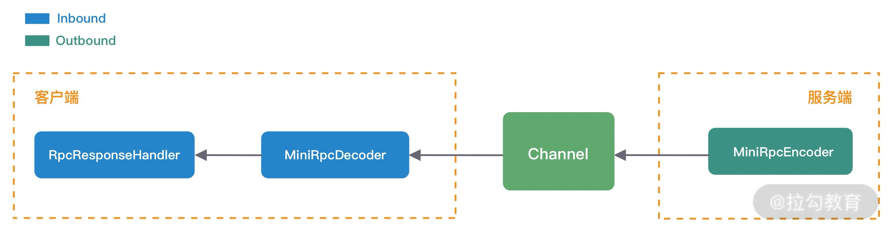
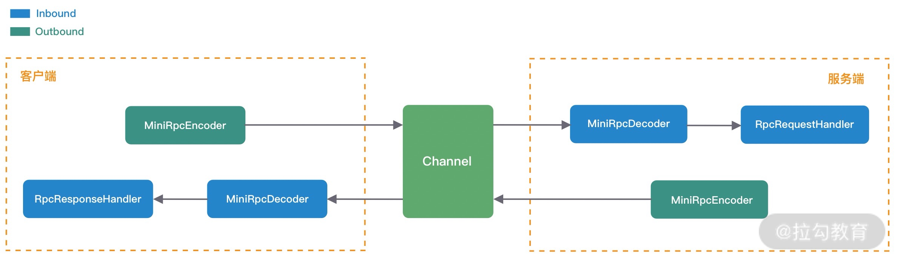

- 00 学好 Netty，是你修炼 Java 内功的必经之路.md.html
- 01 初识 Netty：为什么 Netty 这么流行？.md.html
- 02 纵览全局：把握 Netty 整体架构脉络.md.html
- 03 引导器作用：客户端和服务端启动都要做些什么？.md.html
- 04 事件调度层：为什么 EventLoop 是 Netty 的精髓？.md.html
- 05 服务编排层：Pipeline 如何协调各类 Handler ？.md.html
- 06 粘包拆包问题：如何获取一个完整的网络包？.md.html
- 07 接头暗语：如何利用 Netty 实现自定义协议通信？.md.html
- 08 开箱即用：Netty 支持哪些常用的解码器？.md.html
- 09 数据传输：writeAndFlush 处理流程剖析.md.html
- 10 双刃剑：合理管理 Netty 堆外内存.md.html
- 11 另起炉灶：Netty 数据传输载体 ByteBuf 详解.md.html
- 12 他山之石：高性能内存分配器 jemalloc 基本原理.md.html
- 13 举一反三：Netty 高性能内存管理设计（上）.md.html
- 14 举一反三：Netty 高性能内存管理设计（下）.md.html
- 15 轻量级对象回收站：Recycler 对象池技术解析.md.html
- 16 IO 加速：与众不同的 Netty 零拷贝技术.md.html
- 17 源码篇：从 Linux 出发深入剖析服务端启动流程.md.html
- 18 源码篇：解密 Netty Reactor 线程模型.md.html
- 19 源码篇：一个网络请求在 Netty 中的旅程.md.html
- 20 技巧篇：Netty 的 FastThreadLocal 究竟比 ThreadLocal 快在哪儿？.md.html
- 21 技巧篇：延迟任务处理神器之时间轮 HashedWheelTimer.md.html
- 22 技巧篇：高性能无锁队列 Mpsc Queue.md.html
- 23 架构设计：如何实现一个高性能分布式 RPC 框架.md.html
- 24 服务发布与订阅：搭建生产者和消费者的基础框架.md.html
- 25 远程通信：通信协议设计以及编解码的实现.md.html
- 26 服务治理：服务发现与负载均衡机制的实现.md.html
- 27 动态代理：为用户屏蔽 RPC 调用的底层细节.md.html
- 28 实战总结：RPC 实战总结与进阶延伸.md.html
- 29 编程思想：Netty 中应用了哪些设计模式？.md.html
- 30 实践总结：Netty 在项目开发中的一些最佳实践.md.html
- 31 结束语 技术成长之路：如何打造自己的技术体系.md.html
25 远程通信：通信协议设计以及编解码的实现
上节课我们搭建了服务提供者和服务消费者的基本框架，现在我们可以建立两个模块之间的通信机制了。本节课我们通过向 ChannelPipeline 添加自定义的业务处理器，来完成 RPC 框架的远程通信机制。需要实现的主要功能如下：
- 服务消费者实现协议编码，向服务提供者发送调用数据。
- 服务提供者收到数据后解码，然后向服务消费者发送响应数据，暂时忽略 RPC 请求是如何被调用的。
- 服务消费者收到响应数据后成功返回。
源码参考地址：mini-rpc
RPC 通信方案设计
结合本节课的目标，接下来我们对 RPC 请求调用和结果响应两个过程分别进行详细拆解分析。首先看下 RPC 请求调用的过程，如下图所示。

RPC 请求的过程对于服务消费者来说是出站操作，对于服务提供者来说是入站操作。数据发送前，服务消费者将 RPC 请求信息封装成 MiniRpcProtocol 对象，然后通过编码器 MiniRpcEncoder 进行二进制编码，最后直接向发送至远端即可。服务提供者收到请求数据后，将二进制数据交给解码器 MiniRpcDecoder，解码后再次生成 MiniRpcProtocol 对象，然后传递给 RpcRequestHandler 执行真正的 RPC 请求调用。
我们暂时忽略 RpcRequestHandler 是如何执行 RPC 请求调用的，接下来我们继续分析 RpcRequestHandler 处理成功后是如何向服务消费者返回响应结果的，如下图所示：

与 RPC 请求过程相反，是由服务提供者将响应结果封装成 MiniRpcProtocol 对象，然后通过 MiniRpcEncoder 编码发送给服务消费者。服务消费者对响应结果进行解码，因为 RPC 请求是高并发的，所以需要 RpcRequestHandler 根据响应结果找到对应的请求，最后将响应结果返回。
综合 RPC 请求调用和结果响应的处理过程来看，编码器 MiniRpcEncoder、解码器 MiniRpcDecoder 以及通信协议对象 MiniRpcProtocol 都可以设计成复用的，最终服务消费者和服务提供者的 ChannelPipeline 结构如下图所示。

由此可见，在实现 Netty 网络通信模块时，先画图分析 ChannelHandler 的处理流程是非常有帮助的。
自定义 RPC 通信协议
协议是服务消费者和服务提供者之间通信的基础，主流的 RPC 框架都会自定义通信协议，相比于 HTTP、HTTPS、JSON 等通用的协议，自定义协议可以实现更好的性能、扩展性以及安全性。在《接头暗语：利用 Netty 如何实现自定义协议通信》课程中，我们学习了设计一个完备的通信协议需要考虑哪些因素，同时结合 RPC 请求调用与结果响应的场景，我们设计了一个简易版的 RPC 自定义协议，如下所示：
+---------------------------------------------------------------+
| 魔数 2byte | 协议版本号 1byte | 序列化算法 1byte | 报文类型 1byte |
+---------------------------------------------------------------+
| 状态 1byte | 消息 ID 8byte | 数据长度 4byte |
+---------------------------------------------------------------+
| 数据内容 （长度不定） |
+---------------------------------------------------------------+
我们把协议分为协议头 Header 和协议体 Body 两个部分。协议头 Header 包含魔数、协议版本号、序列化算法、报文类型、状态、消息 ID、数据长度，协议体 Body 只包含数据内容部分，数据内容的长度是不固定的。RPC 请求和响应都可以使用该协议进行通信，对应协议实体类的定义如下所示：
@Data
public class MiniRpcProtocol<T> implements Serializable {
private MsgHeader header; // 协议头
private T body; // 协议体
}
@Data
public class MsgHeader implements Serializable {
private short magic; // 魔数
private byte version; // 协议版本号
private byte serialization; // 序列化算法
private byte msgType; // 报文类型
private byte status; // 状态
private long requestId; // 消息 ID
private int msgLen; // 数据长度
}
在 RPC 请求调用的场景下，MiniRpcProtocol 中泛型 T 对应的 MiniRpcRequest 类型，MiniRpcRequest 主要包含 RPC 远程调用需要的必要参数，定义如下所示。
@Data
public class MiniRpcRequest implements Serializable {
private String serviceVersion; // 服务版本
private String className; // 服务接口名
private String methodName; // 服务方法名
private Object[] params; // 方法参数列表
private Class<?>[] parameterTypes; // 方法参数类型列表
}
在 RPC 结果响应的场景下，MiniRpcProtocol 中泛型 T 对应的 MiniRpcResponse 类型，MiniRpcResponse 实体类的定义如下所示。此外，响应结果是否成功可以使用 MsgHeader 中的 status 字段表示，0 表示成功，非 0 表示失败。MiniRpcResponse 中 data 表示成功状态下返回的 RPC 请求结果，message 表示 RPC 请求调用失败的错误信息。
@Data
public class MiniRpcResponse implements Serializable {
private Object data; // 请求结果
private String message; // 错误信息
}
设计完 RPC 自定义协议之后，我们接下来再来解决 MiniRpcRequest 和 MiniRpcResponse 如何进行编码的问题。
序列化选型
MiniRpcRequest 和 MiniRpcResponse 实体类表示的协议体内容都是不确定具体长度的，所以我们一般会选用通用且高效的序列化算法将其转换成二进制数据，这样可以有效减少网络传输的带宽，提升 RPC 框架的整体性能。目前比较常用的序列化算法包括 Json、Kryo、Hessian、Protobuf 等，这些第三方序列化算法都比 Java 原生的序列化操作都更加高效。
首先我们定义了一个通用的序列化接口 RpcSerialization，所有序列化算法扩展都必须实现该接口，RpcSerialization 接口分别提供了序列化 serialize() 和反序列化 deserialize() 方法，如下所示：
public interface RpcSerialization {
<T> byte[] serialize(T obj) throws IOException;
<T> T deserialize(byte[] data, Class<T> clz) throws IOException;
}
接下来我们为 RpcSerialization 提供了 HessianSerialization 和 JsonSerialization 两种类型的实现类。以 HessianSerialization 为例，实现逻辑如下：
@Component
@Slf4j
public class HessianSerialization implements RpcSerialization {
@Override
public <T> byte[] serialize(T object) {
if (object == null) {
throw new NullPointerException();
}
byte[] results;
HessianSerializerOutput hessianOutput;
try (ByteArrayOutputStream os = new ByteArrayOutputStream()) {
hessianOutput = new HessianSerializerOutput(os);
hessianOutput.writeObject(object);
hessianOutput.flush();
results = os.toByteArray();
} catch (Exception e) {
throw new SerializationException(e);
}
return results;
}
@SuppressWarnings("unchecked")
@Override
public <T> T deserialize(byte[] bytes, Class<T> clz) {
if (bytes == null) {
throw new NullPointerException();
}
T result;
try (ByteArrayInputStream is = new ByteArrayInputStream(bytes)) {
HessianSerializerInput hessianInput = new HessianSerializerInput(is);
result = (T) hessianInput.readObject(clz);
} catch (Exception e) {
throw new SerializationException(e);
}
return result;
}
}
为了能够支持不同序列化算法，我们采用工厂模式来实现不同序列化算法之间的切换，使用相同的序列化接口指向不同的序列化算法。对于使用者来说只需要知道序列化算法的类型即可，不用关心底层序列化是如何实现的。具体实现如下：
public class SerializationFactory {
public static RpcSerialization getRpcSerialization(byte serializationType) {
SerializationTypeEnum typeEnum = SerializationTypeEnum.findByType(serializationType);
switch (typeEnum) {
case HESSIAN:
return new HessianSerialization();
case JSON:
return new JsonSerialization();
default:
throw new IllegalArgumentException("serialization type is illegal, " + serializationType);
}
}
}
有了以上基础知识的储备，接下来我们就可以开始实现自定义的处理器了。
协议编码实现
在《接头暗语：利用 Netty 如何实现自定义协议通信》课程中，我们同样介绍了如何使用 Netty 实现自定义的通信协议。Netty 提供了两个最为常用的编解码抽象基类 MessageToByteEncoder 和 ByteToMessageDecoder，帮助我们很方便地扩展实现自定义协议。
我们接下来要完成的编码器 MiniRpcEncoder 需要继承 MessageToByteEncoder，并重写 encode() 方法，具体实现如下所示：
public class MiniRpcEncoder extends MessageToByteEncoder<MiniRpcProtocol<Object>> {
@Override
protected void encode(ChannelHandlerContext ctx, MiniRpcProtocol<Object> msg, ByteBuf byteBuf) throws Exception {
MsgHeader header = msg.getHeader();
byteBuf.writeShort(header.getMagic());
byteBuf.writeByte(header.getVersion());
byteBuf.writeByte(header.getSerialization());
byteBuf.writeByte(header.getMsgType());
byteBuf.writeByte(header.getStatus());
byteBuf.writeLong(header.getRequestId());
RpcSerialization rpcSerialization = SerializationFactory.getRpcSerialization(header.getSerialization());
byte[] data = rpcSerialization.serialize(msg.getBody());
byteBuf.writeInt(data.length);
byteBuf.writeBytes(data);
}
}
编码逻辑比较简单，在服务消费者或者服务提供者调用 writeAndFlush() 将数据写给对方前，都已经封装成 MiniRpcRequest 或者 MiniRpcResponse，所以可以采用 MiniRpcProtocol<Object> 作为 MiniRpcEncoder 编码器能够支持的编码类型。
协议解码实现
解码器 MiniRpcDecoder 需要继承 ByteToMessageDecoder，并重写 decode() 方法，具体实现如下所示：
public class MiniRpcDecoder extends ByteToMessageDecoder {
@Override
public final void decode(ChannelHandlerContext ctx, ByteBuf in, List<Object> out) throws Exception {
if (in.readableBytes() < ProtocolConstants.HEADER_TOTAL_LEN) {
return;
}
in.markReaderIndex();
short magic = in.readShort();
if (magic != ProtocolConstants.MAGIC) {
throw new IllegalArgumentException("magic number is illegal, " + magic);
}
byte version = in.readByte();
byte serializeType = in.readByte();
byte msgType = in.readByte();
byte status = in.readByte();
long requestId = in.readLong();
int dataLength = in.readInt();
if (in.readableBytes() < dataLength) {
in.resetReaderIndex();
return;
}
byte[] data = new byte[dataLength];
in.readBytes(data);
MsgType msgTypeEnum = MsgType.findByType(msgType);
if (msgTypeEnum == null) {
return;
}
MsgHeader header = new MsgHeader();
header.setMagic(magic);
header.setVersion(version);
header.setSerialization(serializeType);
header.setStatus(status);
header.setRequestId(requestId);
header.setMsgType(msgType);
header.setMsgLen(dataLength);
RpcSerialization rpcSerialization = SerializationFactory.getRpcSerialization(serializeType);
switch (msgTypeEnum) {
case REQUEST:
MiniRpcRequest request = rpcSerialization.deserialize(data, MiniRpcRequest.class);
if (request != null) {
MiniRpcProtocol<MiniRpcRequest> protocol = new MiniRpcProtocol<>();
protocol.setHeader(header);
protocol.setBody(request);
out.add(protocol);
}
case RESPONSE:
MiniRpcResponse response = rpcSerialization.deserialize(data, MiniRpcResponse.class);
if (response != null) {
MiniRpcProtocol<MiniRpcResponse> protocol = new MiniRpcProtocol<>();
protocol.setHeader(header);
protocol.setBody(response);
out.add(protocol);
}
case HEARTBEAT:
// TODO
break;
}
}
}
解码器 MiniRpcDecoder 相比于编码器 MiniRpcEncoder 要复杂很多，MiniRpcDecoder 的目标是将字节流数据解码为消息对象，并传递给下一个 Inbound 处理器。整个 MiniRpcDecoder 解码过程有几个要点要特别注意：
- 只有当 ByteBuf 中内容大于协议头 Header 的固定的 18 字节时，才开始读取数据。
- 即使已经可以完整读取出协议头 Header，但是协议体 Body 有可能还未就绪。所以在刚开始读取数据时，需要使用 markReaderIndex() 方法标记读指针位置，当 ByteBuf 中可读字节长度小于协议体 Body 的长度时，再使用 resetReaderIndex() 还原读指针位置，说明现在 ByteBuf 中可读字节还不够一个完整的数据包。
- 根据不同的报文类型 MsgType，需要反序列化出不同的协议体对象。在 RPC 请求调用的场景下，服务提供者需要将协议体内容反序列化成 MiniRpcRequest 对象；在 RPC 结果响应的场景下，服务消费者需要将协议体内容反序列化成 MiniRpcResponse 对象。
请求处理与响应
在 RPC 请求调用的场景下，服务提供者的 MiniRpcDecoder 编码器将二进制数据解码成 MiniRpcProtocol<MiniRpcRequest> 对象后，再传递给 RpcRequestHandler 执行 RPC 请求调用。RpcRequestHandler 也是一个 Inbound 处理器，它并不需要承担解码工作，所以 RpcRequestHandler 直接继承 SimpleChannelInboundHandler 即可，然后重写 channelRead0() 方法，具体实现如下：
@Slf4j
public class RpcRequestHandler extends SimpleChannelInboundHandler<MiniRpcProtocol<MiniRpcRequest>> {
private final Map<String, Object> rpcServiceMap;
public RpcRequestHandler(Map<String, Object> rpcServiceMap) {
this.rpcServiceMap = rpcServiceMap;
}
@Override
protected void channelRead0(ChannelHandlerContext ctx, MiniRpcProtocol<MiniRpcRequest> protocol) {
RpcRequestProcessor.submitRequest(() -> {
MiniRpcProtocol<MiniRpcResponse> resProtocol = new MiniRpcProtocol<>();
MiniRpcResponse response = new MiniRpcResponse();
MsgHeader header = protocol.getHeader();
header.setMsgType((byte) MsgType.RESPONSE.getType());
try {
Object result = handle(protocol.getBody()); // TODO 调用 RPC 服务
response.setData(result);
header.setStatus((byte) MsgStatus.SUCCESS.getCode());
resProtocol.setHeader(header);
resProtocol.setBody(response);
} catch (Throwable throwable) {
header.setStatus((byte) MsgStatus.FAIL.getCode());
response.setMessage(throwable.toString());
log.error("process request {} error", header.getRequestId(), throwable);
}
ctx.writeAndFlush(resProtocol);
});
}
}
因为 RPC 请求调用是比较耗时的，所以比较推荐的做法是将 RPC 请求提交到自定义的业务线程池中执行。其中 handle() 方法是真正执行 RPC 调用的地方，你可以先留一个空的实现，在之后动态代理的课程中我们再完成它。根据 handle() 的执行情况，MiniRpcProtocol<MiniRpcResponse> 最终会被设置成功或者失败的状态，以及相应的请求结果或者错误信息，最终通过 writeAndFlush() 方法将数据写回服务消费者。
上文中我们已经分析了服务消费者入站操作，首先要经过 MiniRpcDecoder 解码器，根据报文类型 msgType 解码出 MiniRpcProtocol<MiniRpcResponse> 响应结果，然后传递给 RpcResponseHandler 处理器，RpcResponseHandler 负责响应不同线程的请求结果，具体实现如下：
public class RpcResponseHandler extends SimpleChannelInboundHandler<MiniRpcProtocol<MiniRpcResponse>> {
@Override
protected void channelRead0(ChannelHandlerContext ctx, MiniRpcProtocol<MiniRpcResponse> msg) {
long requestId = msg.getHeader().getRequestId();
MiniRpcFuture<MiniRpcResponse> future = MiniRpcRequestHolder.REQUEST_MAP.remove(requestId);
future.getPromise().setSuccess(msg.getBody());
}
}
public class MiniRpcRequestHolder {
public final static AtomicLong REQUEST_ID_GEN = new AtomicLong(0);
public static final Map<Long, MiniRpcFuture<MiniRpcResponse>> REQUEST_MAP = new ConcurrentHashMap<>();
}
@Data
public class MiniRpcFuture<T> {
private Promise<T> promise;
private long timeout;
public MiniRpcFuture(Promise<T> promise, long timeout) {
this.promise = promise;
this.timeout = timeout;
}
}
服务消费者在发起调用时，维护了请求 requestId 和 MiniRpcFuture<MiniRpcResponse> 的映射关系，RpcResponseHandler 会根据请求的 requestId 找到对应发起调用的 MiniRpcFuture，然后为 MiniRpcFuture 设置响应结果。
我们采用 Netty 提供的 Promise 工具来实现 RPC 请求的同步等待，Promise 基于 JDK 的 Future 扩展了更多新的特性，帮助我们更好地以同步的方式进行异步编程。Promise 模式本质是一种异步编程模型，我们可以先拿到一个查看任务执行结果的凭证，不必等待任务执行完毕，当我们需要获取任务执行结果时，再使用凭证提供的相关接口进行获取。
至此，RPC 框架的通信模块我们已经实现完了。自定义协议、编解码、序列化/反序列化都是实现远程通信的必备基础知识，我们务必要熟练掌握。此外在《架构设计：如何实现一个高性能分布式 RPC 框架》课程中，我们介绍了 RPC 调用的多种方式，快开动你的大脑，想想其他方式应当如何实现呢？
总结
本节课我们通过 RPC 自定义协议的设计与实现，加深了对 Netty 自定义处理器 ChannelHandler 的理解。ChannelPipeline 和 ChannelHandler 是我们在项目开发过程中打交道最多的组件，在设计之初一定要梳理清楚 Inbound 和 Outbound 处理的传递顺序，以及数据模型之间是如何转换的。
留两个课后任务：
- Protobuf 序列化算法也是我们必备的技能，在本课程中并未实现，需要你按照接口规范进行扩展。
- 如果希望对协议体的内容进行压缩，那么 RPC 自定义协议应该如何改进呢？编解码器又该如何实现呢？